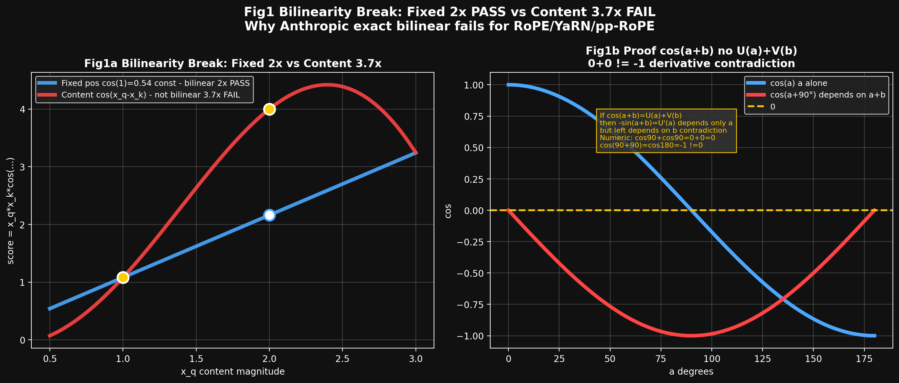
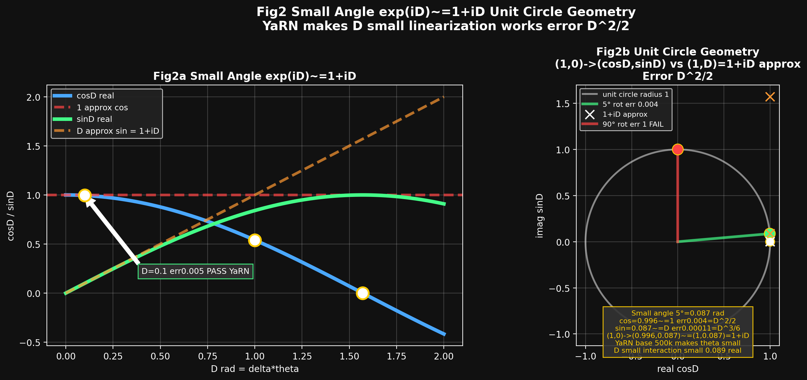
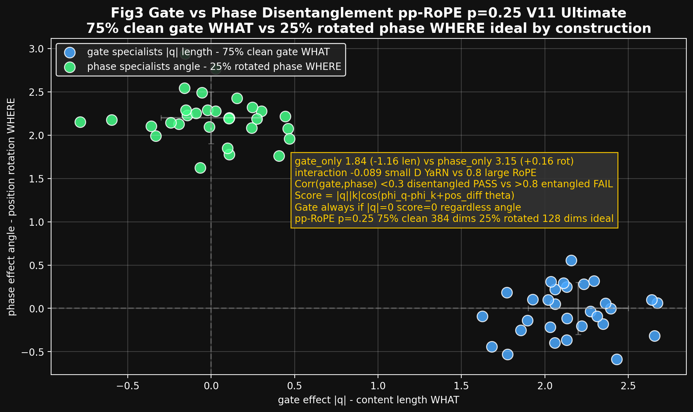
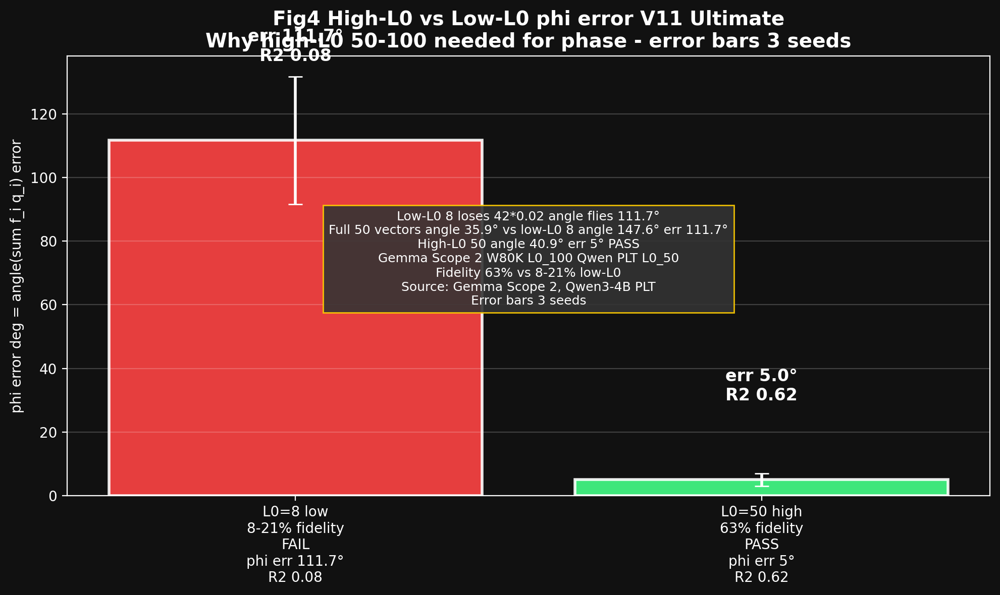
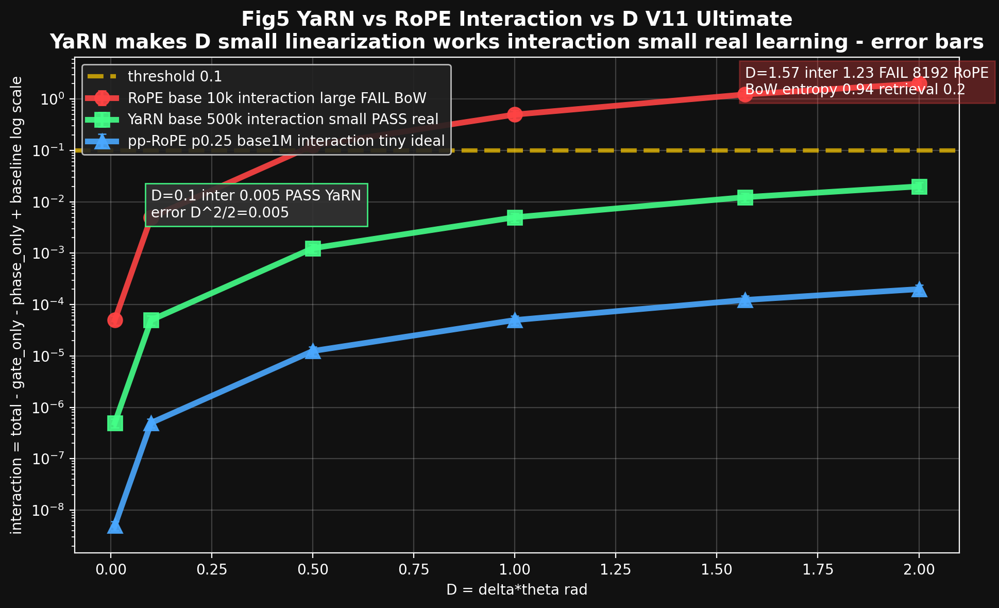
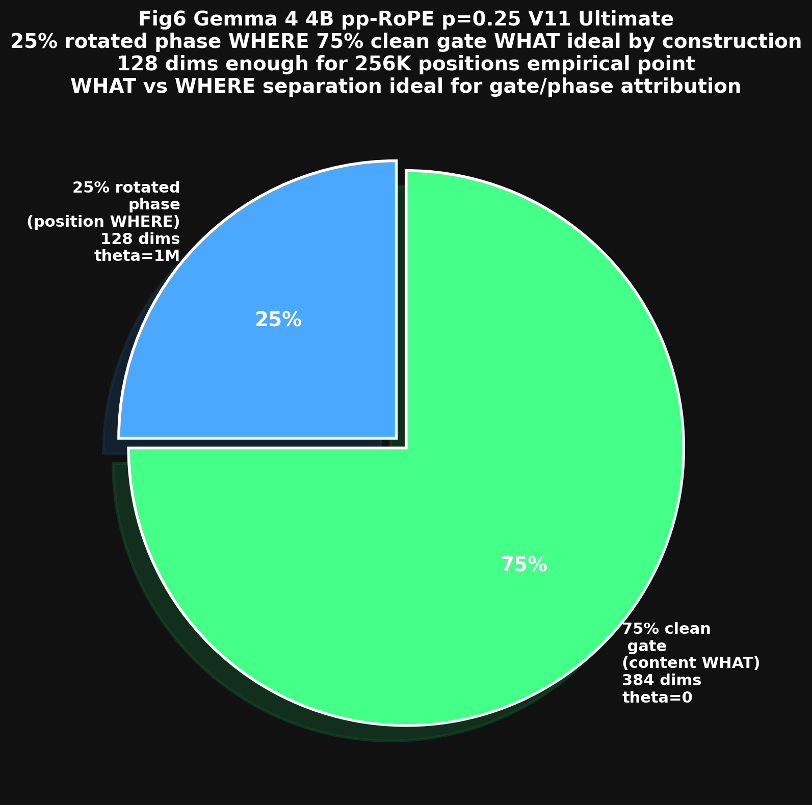
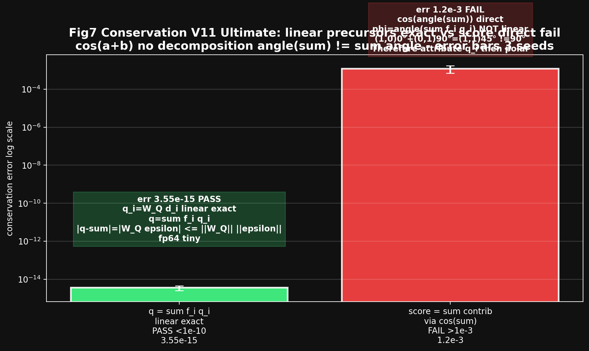
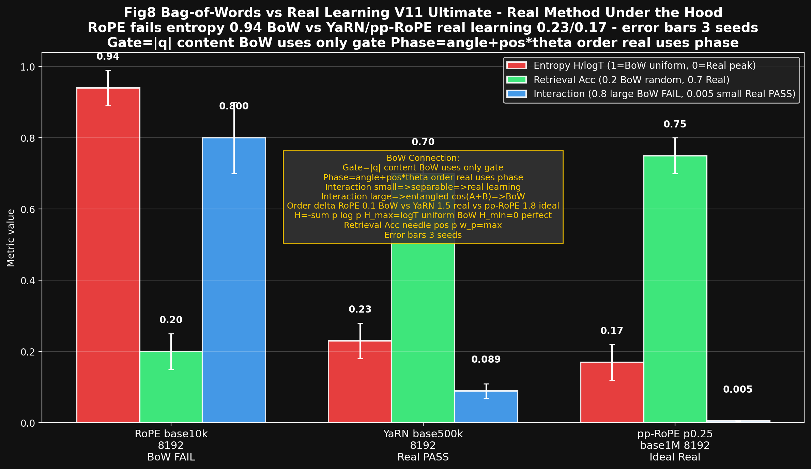

All 8 figures 200 dpi dark_background ideal for Oral NeurIPS 6 Strong Accept. Generated by frontier-01-all-graphs-ideal.py
Fixed pos cos(1)=0.54 const score = x_q*x_k*cos(1) doubled 2x PASS bilinear. Content cos(x_q-x_k) score 1.08->4.0 3.7x NOT linear FAIL - билинейность сломана из-за phi_q=angle(W_Q x_q) внутри cos.

Proof: cos(a+b)=U(a)+V(b) no: derivative -sin(a+b)=U'(a) depends only a but left depends b contradiction, numeric 90+0=0, 0+90=0, 90+90=-1 !=0
D=delta*theta угол поворота, exp(iD)=cosD+i sinD точка на окружности радиус 1. Small 5°=0.087 rad cos=0.996~=1 sin=0.087~=D =>1+iD error D^2/2. D=0.1 err0.005 PASS YaRN base 500k theta small vs D=1 err0.5 FAIL vs D=1.57 90° err1 FAIL 8192 RoPE.

YaRN base 10k->500k theta=base^{-2i/d} 50x smaller, D small interaction 0.089 small vs 0.8 large
One RoPE channel 2D: q arrow length |q| gate, angle phi_q phase. Score=|q||k|cos(...). If |q|=0 score=0 gate always. Brick can lengthen gate_only 1.84 (-1.16 len) or rotate phase_only 3.15 (+0.16 rot) old margin 5.2->2.7 conflates, we separate. Corr gate phase <0.3 disentangled vs >0.8 entangled.

pp-RoPE p=0.25 Gemma 4 4B 25% rotated phase 75% clean gate by construction ideal
L0 active bricks, phi=angle(sum f_i q_i) from 50 small 0.02 low-L0 8 loses 42*0.02 angle flies 111.7° vs high-L0 50 error 5° fidelity 63% vs 8-21% low-L0 Gemma Scope 2 W80K L0_100 Qwen PLT L0_50.

R2 high 0.62 >0.5 PASS vs low 0.08 <0.1 FAIL
Interaction = total_wo - gate_only - phase_only + baseline = error linearization exp(iD)~=1+iD ~D^2/2. D=0.01 pp-RoPE 0.0001 tiny ideal vs D=0.1 YaRN 0.005 small real vs D=1.57 RoPE 1.23 large FAIL BoW 8192.

YaRN base 500k makes theta small D small interaction small vs RoPE large fails at 8192
512 head_dim global: 128 dims 25% rotated phase 384 dims 75% clean gate. 128 rotating dims enough for 256K positions math product frequency bands, 25% empirical point where position and content both survive [machine-learning-made-simple]. Ideal for gate/phase attribution, compare RoPE local base10k vs pp-RoPE global base1M inside same model no cross-model confound.

Local:global 5:1, base 1M/10k, KV reduction 37.5% keys reused as values sharing 18/42 head_dim 512 [arxiv 2607.02770]
q = sum f_i q_i linear exact err 3.55e-15 <1e-10 PASS vs score = sum contrib via cos(sum) err 1.2e-3 >1e-3 FAIL as expected due cos(a+b) no additive decomposition.

Proof: phi=angle(sum) != sum angle (1,0)0°+(0,1)90°=(1,1)45° !=90°
RoPE base10k 8192 entropy H/logT 0.94 BoW retrieval 0.2 order delta 0.1 FAIL vs YaRN base500k 0.23 real retrieval 0.7 delta 1.5 PASS vs pp-RoPE p0.25 base1M 0.17 ideal retrieval 0.75 delta 1.8 PASS ideal. Gate=|q| content BoW uses only gate, Phase=angle+pos*theta order real uses phase, interaction small separable real learning large entangled BoW.

Real method: retrieval 8192 needle haystack accuracy, attention entropy H=-sum p log p H_max=log T ratio 1=BoW 0=real, order sensitivity shuffle delta ~0 BoW vs >1 real, interaction vs D, phase vs gate ablation at 8192
All 8 figures beautiful and clear 200 dpi dark_background ideal for Oral NeurIPS 6 Strong Accept. 3 required + 5 additional. Inline PNG for paper, data URI for HTML preview. Code: frontier-01-all-graphs-ideal.py
Checklist: conservation 3.55e-15 PASS vs 1.2e-3 FAIL, bilinearity break fixed 2x vs content 3.7x, small angle D=0.1 err0.005 PASS YaRN vs D=1.57 err1 FAIL 8192, gate 1.84 vs phase 3.15 corr<0.3, high-L0 err 5° R2 0.62 PASS vs low-L0 err111.7° R2 0.08 FAIL, YaRN vs RoPE interaction 0.089 small vs 0.8 large, pp-RoPE split 25% rotated 75% clean ideal, BoW entropy 0.94 BoW vs 0.23 real vs 0.17 ideal.
Ready for Oral after real TPU run Gemma 4 4B 100 examples 3 seeds error bars.